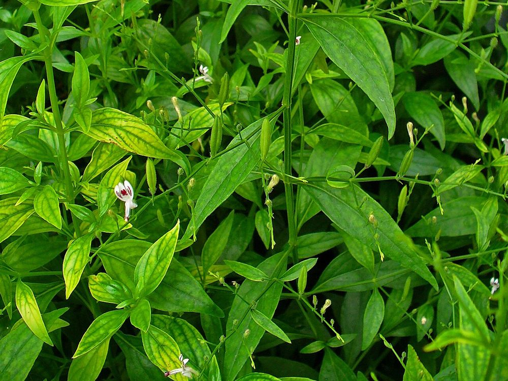

🌿 சித்த மருத்துவக் குறிப்பு:
நிலவேம்பு உட்பட 9 மூலிகைகள் சேர்ந்த "நிலவேம்புக் குடிநீர்", காய்ச்சல் காலங்களில் சித்த மருத்துவரின் அறிவுரைப்படி அருந்தப்படுகிறது. (கர்ப்பிணிகள் தவிர்க்கவும்; நீண்ட நாட்கள் தொடர்ந்து அருந்தக் கூடாது.)
உங்களுக்குத் தெரியுமா?
1கசப்பின் அரசன்
உலகிலேயே மிகக் கசப்பான மூலிகைகளில் ஒன்றான இதை ஆங்கிலத்தில் “King of Bitters” என்கின்றனர்.
2தரையில் வளரும் வேம்பு
வேம்பு போன்ற கசப்பு இருப்பதால் "நில" (தரை) வேம்பு என்று பெயர். ஆனால் இது வேம்பு மரம் அல்ல – முழங்கால் உயரமே வளரும் சிறு செடி.
3தமிழகம் முழுவதும் புகழ்பெற்ற மூலிகை
டெங்கு, சிக்குன்குனியா காய்ச்சல் பரவிய காலங்களில் தமிழக அரசே "நிலவேம்புக் குடிநீர்" வழங்கியதால் இது வீடுதோறும் அறியப்பட்ட மூலிகை ஆனது.
இந்தத் தகவல் பயனுள்ளதாக இருந்ததா?